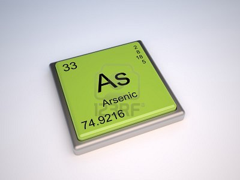

ARSENICO:

El arsénico (del persa Zarnikh, oropimente amarillo o bien del griego arsenikón, masculino) es un elemento químico de la tabla periódica cuyo símbolo es As y el número atómico es 33. En la tabla periódica de los elementos se encuentra en el quinto grupo principal. El arsénico se presenta raramente sólido, principalmente en forma de sulfuros. Pertenece a los metaloides, ya que muestra propiedades intermedias entre los metales y los no metales.
 Ir a página principal
Ir a página principal